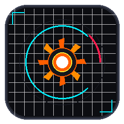
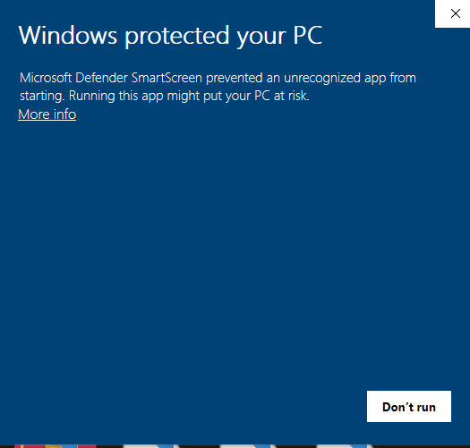

CoreBurner X11
Standalone PC Benchmark & Hardware Monitor
A premium, native Windows system telemetry tracking, benchmarking, and real-time dashboard application built in Python and PyQt5. Designed to mimic the high-tech cockpit feeling of advanced overclocking tools like MSI Afterburner, CoreBurner X11 offers deep hardware insights and interactive performance tests.
Cyberpunk Dashboard UI
Frameless, draggable dark-themed console with neon orange accents, glowing dial gauges, and animated rolling telemetry charts.
100% Accurate Hardware Telemetry
Monitors Nvidia GPU load, core temp, and VRAM via driver-level queries; CPU load & core frequencies; system memory; storage I/O, and active network speeds.
Comprehensive Benchmark Suite
Includes a multi-threaded mathematical sieve CPU solver, particles-stress 2D/3D GPU render test, and binary buffer Disk write/read speed benchmark.
Floating OSD Overlay
A transparent, draggable floating monitor widget (similar to RivaTuner RTSS) to inspect hardware performance live while gaming.
Windows SmartScreen Note (False Positive)
When launching the software for the first time, Windows Defender SmartScreen might show a warning message saying "Windows protected your PC". This is 100% normal and is not a virus or malware.

Why does this happen?
This happens because CoreBurner X11 is a newly compiled standalone desktop application in Python (packaged via PyInstaller) that is not signed with an expensive Microsoft Developer Certificate. As a result, Windows reputation-based protection flags it temporarily until more users download and run it.
How to run the software safely:
- Double-click the downloaded CoreBurner_X11.exe file.
- In the blue popup window, click on the "More info" link under the text.
- A new button called "Run anyway" will appear at the bottom right.
- Click "Run anyway" to launch the application safely.
Download Package
CoreBurner X11
- Compile-free standalone portable build
- No installation required - download & launch
- Includes full source code archive
- Clean and secure package signature
File Info
Development
Changelog & Roadmap
Current v1.1.0
- PyQt5 Engine: Fully migrated UI to PyQt5 native windows for lag-free rendering.
- Nvidia Telemetry: Added direct Driver-level queries via nvidia-smi engine.
- Float OSD: Fully draggable/resizable overlays with configurable opacity.
Upcoming v1.2.0
- AMD GPU Support: Direct telemetry query integration for Radeon GPUs.
- Custom Skins: Color theme switcher (Cyan Neon, Carbon black, and Forest green).
- CSV Export: Ability to log system performance to spreadsheets for testing analysis.